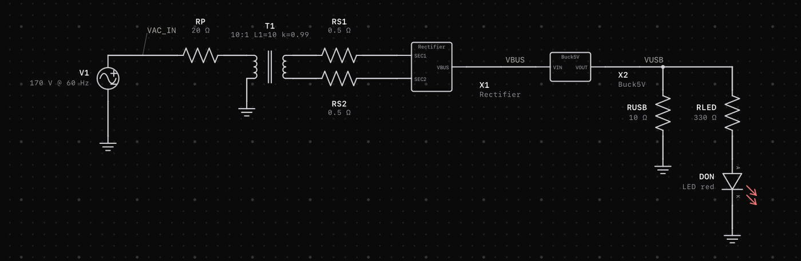
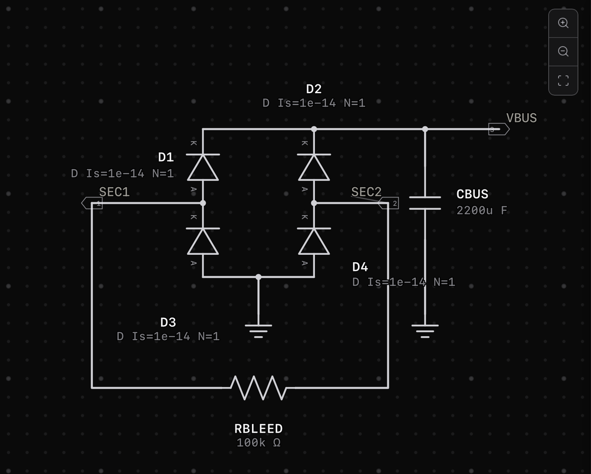
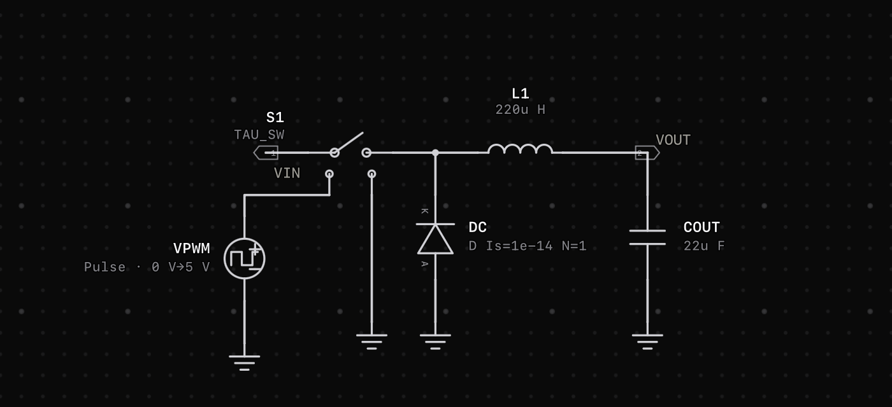
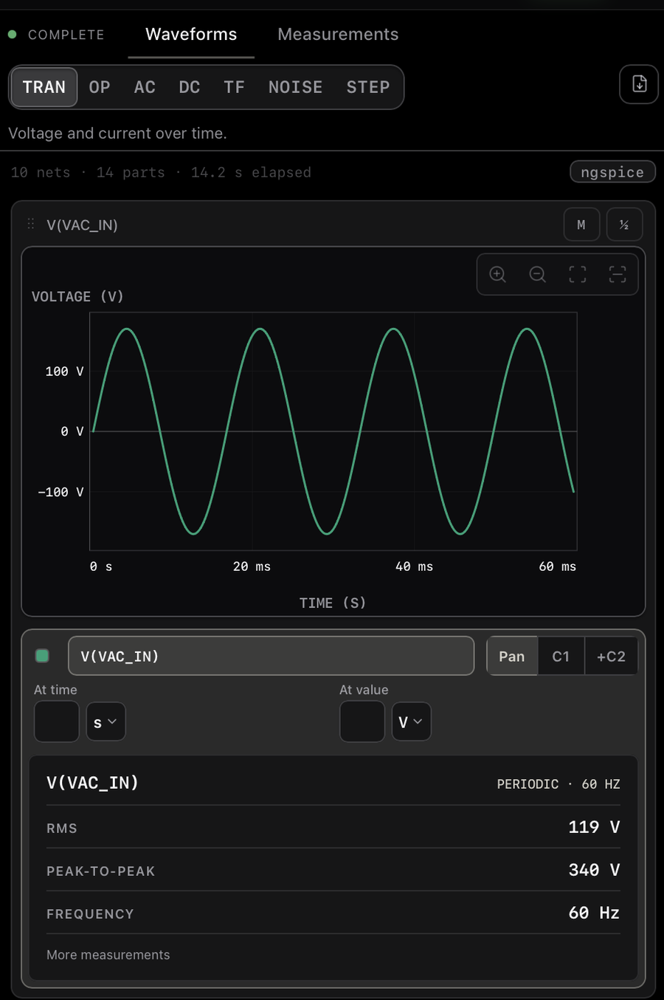
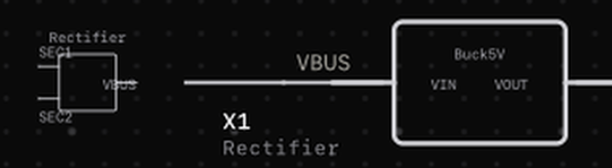
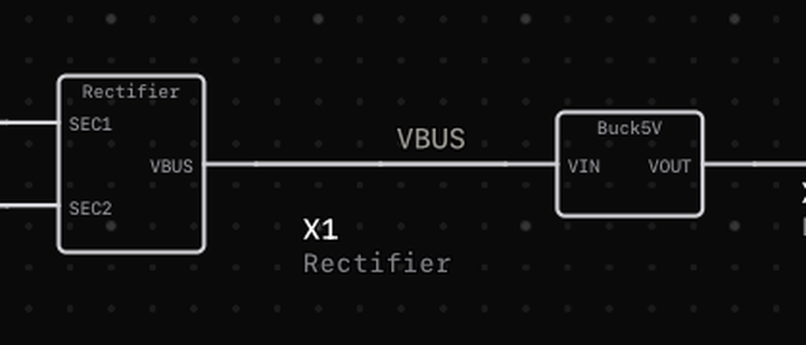

Tau · worked example · hierarchical subcircuits
A complete power supply, drawn the way you would actually draw one: one sheet per job, wired together on a parent sheet. The folder beside this file simulates in ngspice, and every number here was measured on the deck Tau generates from it.
That third tile is the honest version of a figure this page previously printed as 0.03 % accuracy. It is not accuracy. The converter is open loop, so its output is set by a fixed duty cycle and moves with the load. Measured on this deck: 5 Ω gives 4.67 V, 10 Ω gives 5.00 V, 20 Ω gives 5.23 V, 50 Ω gives 5.41 V. The 5.00 V is where the tuning landed at one load, not a regulation spec.
.subckt.subckt symbol whose value is the model name and
whose pins are an ordered bank p1…pN, each labelled with one
of the child's port names..subckt per child and wires the parent's own
nets into it positionally.The seam, straight out of DECK.txt:
.subckt Rectifier SEC1 SEC2 VBUS ← child 1 declares its interface … four diodes, 2200 uF, bleeder … .ends Rectifier .subckt Buck5V VIN VOUT ← child 2 declares its interface … switch, 220 uH, catch diode … .ends Buck5V V1 vac_in 0 DC 0 AC 170 SIN(0 170 60) X1 n004 n005 vbus Rectifier ← parent nets to SEC1 SEC2 VBUS X2 vbus vusb Buck5V ← parent nets to VIN VOUT RUSB vusb 0 10
vbus is the third node of X1 and the first node
of X2. One net, two blocks: the rectifier handing its DC bus
to the converter across a sheet boundary. Nothing else in the project
asserts this; the netlist is the proof.

top.sim, the parent. Left to right: the outlet, the
transformer, the two blocks, the load. The wire labels
VAC_IN, VBUS and
VUSB are the parent's own nets; the names inside
each block are the child's ports.Ports SEC1 (In), SEC2 (In), VBUS (Out). A full-wave bridge as two vertical diode legs between a positive rail and a ground rail, a 2200 uF bulk capacitor, and a 100 kΩ bleeder across the AC inputs. Three ports, so this is also the example of a block that is not simply in and out.

Ports VIN (In), VOUT (Out). A 200 kHz switching buck: a voltage-controlled switch, a catch diode, a 220 uH inductor, a 22 uF output capacitor, and an on-sheet pulse source as the gate drive.

The outlet (170 60, see the trap below), 20 Ω of primary winding resistance, a 10:1 L1=10 k=0.99 transformer, 0.5 Ω per secondary winding, both blocks, a 10 Ω USB load and a red power-on LED.

Cycle-mean of V(VBUS) across the whole run, from this folder's deck. The shaded band is the 50 ms to 60 ms averaging window every number on this page uses. The bus climbs from 5.8 V at 6 ms to 13.5 V settled, so averaging from t=0 would have reported it about 1.5 V low.
A real restriction, and knowing it before you draw saves an afternoon. A
child sheet compiles to a .subckt body, so every
device in it must map to a single ngspice card.
ground, resistor, capacitor, polarized capacitor, inductor, diode, switch, voltage source, nested blocks.
transformer, LED, zener, photodiode, all transistors, op-amp, comparator, potentiometer, relay, motor, AC and pulse stimulus sources.
That is why the transformer sits on top.sim and not inside
Rectifier.sim. A transformer expands to two inductors plus a
K coupling statement, three cards, and a child sheet refuses it
by name:
T1 (transformer) on "Rectifier.sim" is not yet supported inside a linked sheet. It expands to several ngspice devices, which a linked sheet's block body does not generate yet.
The LED is on the parent for a different reason: it needs a model library.
Write D Is=1e-14 N=1 on every one. A diode placed from the
palette, with no LTspice provenance, compiles to Tau's ideal piecewise
model, and the ideal one does not converge when hard switched, which is
all a bridge ever does, 120 times a second.
Tau's default primary inductance is 10 mH, whose reactance at 60 Hz is 3.8 Ω: effectively a dead short across the outlet. At 10 H it is 3.8 kΩ, so magnetizing current is a realistic 32 mA.
Perfect coupling plus a floating secondary is a singular system. At
0.999 this exact circuit dies with
Timestep too small; trouble with node l2_intern__ at
6.9 us. The winding resistances and the bleeder
are load bearing for the same reason: they damp the secondary enough to
solve.
Roughly fifteen minutes. Every value you need is given.
Rectifier.sim.
Four diodes in two vertical legs between a positive rail and a ground rail,
each valued D Is=1e-14 N=1. Add a capacitor
2200u from rail to ground and a resistor 100k
across the two AC input nodes.SEC1 and SEC2 and the rail
VBUS. Open Sheet interface and mark them In, In, Out,
in that order. The footer should read
Ready … Pinout in order: SEC1, SEC2, VBUS.Buck5V.sim.
A switch (TAU_SW), a catch diode
D Is=1e-14 N=1 pointing up out of ground into the switching
node, an inductor 220u, a capacitor 22u to
ground, and a voltage source valued
PULSE(0 5 0 1n 1n 2.04u 5u) driving the switch's control
pins. Label VIN/VOUT, mark them In/Out.top.sim.
AC source 170 60; resistor 20; transformer
10:1 L1=10 k=0.99; two resistors 0.5 on the
secondary; resistor 10 as the USB load; resistor
330 and an LED LED red as the indicator. Ground
the source return, the load and the LED.Rectifier, Buck5V), point it at the child file,
and give it an ordered pin bank whose labels match the child's ports
exactly..tran 100n 60m. 60 ms is about 3.6 mains cycles
plus the settling shown above; the 100 ns step still resolves the
5 us switching period with 50 points. At Tau's
default resolution the switching edges alias and you measure noise instead
of a converter.Or regenerate the folder from Tau's own writers:
WRITE_USB_PSU=1 npx vitest run --root apps/desktop \ src/schematic/usbPsuFolder.test.ts
The same test re-reads this folder from disk on every ordinary test run and recompiles it, so if these files go stale the suite fails.
Real ngspice, averaged over 50 ms to 60 ms so the mains and the bulk
capacitor have both settled. Ripple is peak to peak. Three significant
figures throughout, which is what the solver justifies: quoting
13.4236 V on a rail carrying
469 mV of ripple would claim a resolution
4689× finer than the signal's own excursion. Run it
with ngspice -b -r out.raw DECK.txt; the -r is not
optional, because batch mode refuses a deck with no
.print/.plot card and Tau emits .save.
| Node | Value | Ripple | Note |
|---|---|---|---|
V(VAC_IN) | 170V | n/a | SET, not measured: the source amplitude is exact by construction. SPICE sine amplitude is peak, so 170 V pk is 120.2 V RMS nominal. |
V(VBUS) | 13.4V | 469mV | rectified and smoothed, ripple at 120 Hz |
V(VUSB) | 5.00V | 194mV | at 10 Ω only, see the limit above |
I(DON) | 9.08mA | n/a | CONDUCTING: the power-on LED is lit |
I(RUSB) | 500mA | n/a | 2.50 W delivered |
Fixed 40.8 % duty, no feedback, so it holds 5 V only at the load it was tuned for. The load sweep at the top of this page is the measured extent of that. A real charger measures its own output and corrects every cycle. Adding the loop is the natural next exercise, and it is why this is a teaching circuit rather than a design to build.
Theory says D = (Vout + Vf) / (Vbus + Vf), near 0.404. But
raising duty draws more bus current, which sags the bus, which lowers the
output, so the answer is a fixed point rather than a formula. The ON time
was swept against the real engine until V(VUSB)
reached 5 V. It came out at 2.04 us.
Drawing this project surfaced two real defects in Tau's block rendering. Both are fixed; the before and after are kept because the cause is instructive.

X1 drew at
28 px with "Rectifier" outside the box and through
the SEC1 label; the two-port X2 drew at
84 px.
X1 stays taller because it genuinely has three ports, and
"Rectifier" sits inside its body clear of all three pin labels.
sourceSymbolFitScale exists to stretch an imported LTspice
source symbol onto the pin span its file declares, and it measures
pins[0] to pins[1] to do
it. That assumes the first two pins are the opposite ends of a two-terminal
part. A three-port block stacks two pins on one side, so the rectifier
measured its own 32-unit vertical pin
pitch against the native 64-unit
horizontal span and scaled itself to 0.5, next to
a two-port block at 1.5. Project blocks now
return 1 and let the body geometry size them;
imported symbols keep the old path.
The body reserved maxPinY + 12 of height, and the model name is drawn with its baseline at minY + 8. A 7px glyph box hangs about 1.5 units below its own baseline, so the caption occupied minY + 1.5 to minY + 9.5 and crossed into the pin-caption band the moment a pin sat off centre. The reserve is now maxPinY + 18, derived from that inequality rather than guessed. A two-port bank still floors at 20, so no block that rendered correctly changed size.
Both fixes carry mutation-checked tests. Reverting the scale fix fails with
expected 0.5 to be 1; reverting the height fix fails with
expected -18.5 to be less than -20, which is the 1.5-unit
encroachment stated above. Every caption on all three sheets was then
audited in the browser against every other caption, every symbol stroke and
every wire: zero overlaps remain, and the only contacts left are
sub-pixel line-box touches between a component's own reference and its
value, which is how the label placer stacks them by design.